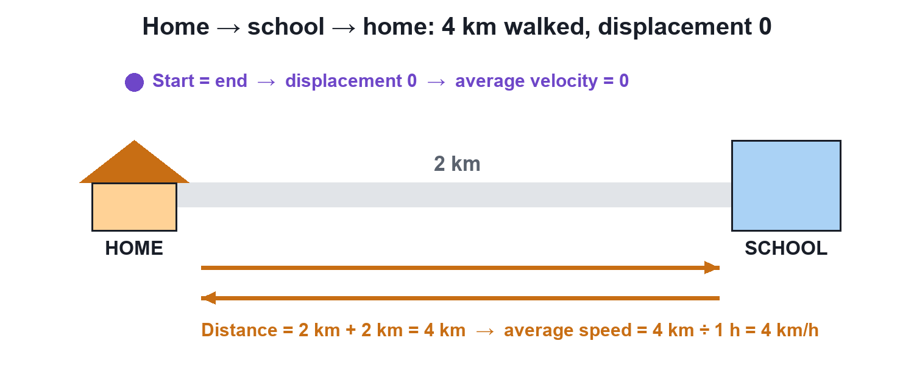
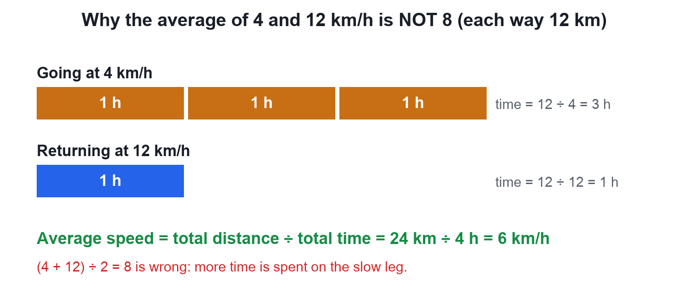

Average Speed vs Average Velocity
Video not playing? Watch on Instagram · YouTube
Walk 4 km to school and back in an hour: average speed 4 km/h, average velocity zero. One uses total distance, the other displacement.
Download the short notesPDF, 173 KB · solved examples, practice set and answer key That's all the videos in this chapter so far Back to Motion
Key points
- Average speed = total distance ÷ total time (scalar).
- Average velocity = total displacement ÷ total time (vector).
- A round trip has average velocity 0 but a non-zero average speed.
- Never average two speeds directly: 4 and 12 km/h over equal distances give 6, not 8.
- |Average velocity| ≤ average speed.
The surprising walk
A boy walks 2 km to school and 2 km back in 1 hour. Distance = 4 km, so average speed = 4 km/h. He ends where he started, so displacement = 0 and average velocity = 0.

Average speed = total distance ÷ total time; average velocity = total displacement ÷ total time
The trap: averaging two speeds
Going 12 km at 4 km/h takes 3 h; returning 12 km at 12 km/h takes 1 h. Average speed = 24 km ÷ 4 h = 6 km/h, not (4 + 12) ÷ 2 = 8, because more time is spent on the slow leg.

Comparison
| Feature | Average speed | Average velocity |
|---|---|---|
| Uses | Total distance | Displacement |
| Type | Scalar | Vector |
| Zero after moving? | No | Yes (round trip) |
| Relation | ≥ |average velocity| | ≤ average speed |
Try it yourself
Goal: Compare average speed (path length ÷ time) with average velocity (displacement ÷ time) on different paths.
- Pick a path: straight, there-and-back, zig-zag or circle.
- Press Play or drag the time slider to the end.
- Read the average speed and the average velocity.
- On there-and-back and the full circle, see the average velocity fall to zero while the average speed does not.
Quick quiz
5 questions. Choose an answer for each, then submit to see your score and the explanations.
More from Motion
 Distance vs DisplacementDistance counts the whole path you walked; displacement only looks at the straight line from start to end, with its direction.Physics · simulation
Distance vs DisplacementDistance counts the whole path you walked; displacement only looks at the straight line from start to end, with its direction.Physics · simulation Speed vs VelocityTwo cars at the same 60 km/h can have different velocities. Speed tells how fast; velocity also tells which way.Physics · simulation
Speed vs VelocityTwo cars at the same 60 km/h can have different velocities. Speed tells how fast; velocity also tells which way.Physics · simulation Motion: Chapter IntroductionSitting still? With the Earth you are moving at about 1,500 km/h. Motion is a change of position with time, measured from a reference point, and this chapter gives the tools to describe it.Physics
Motion: Chapter IntroductionSitting still? With the Earth you are moving at about 1,500 km/h. Motion is a change of position with time, measured from a reference point, and this chapter gives the tools to describe it.Physics Rest and Motion: Motion is RelativeAre you moving right now? It depends on who is watching. Rest and motion are always measured from a reference point.Physics · simulation
Rest and Motion: Motion is RelativeAre you moving right now? It depends on who is watching. Rest and motion are always measured from a reference point.Physics · simulation